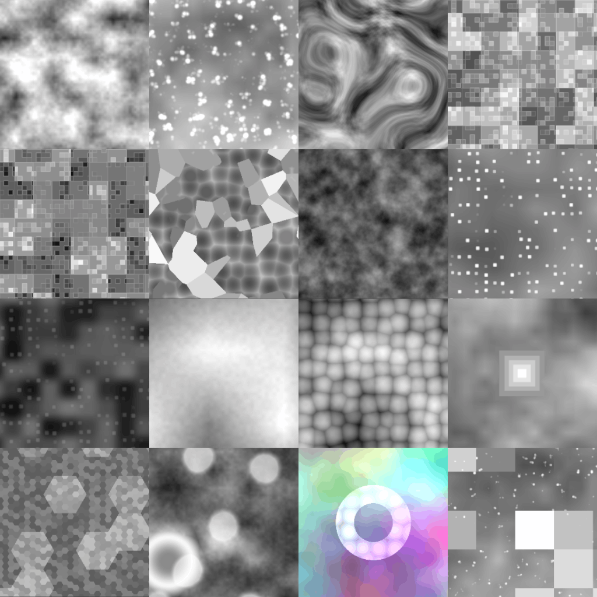
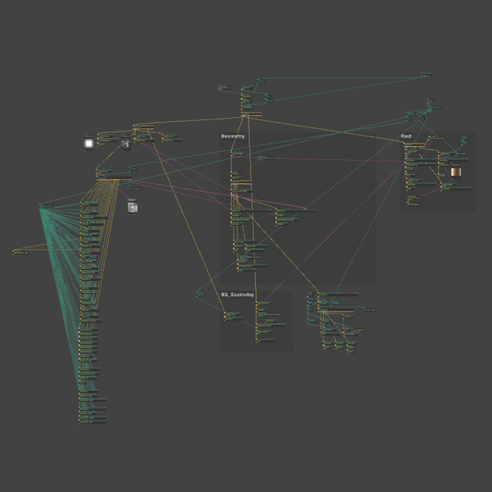
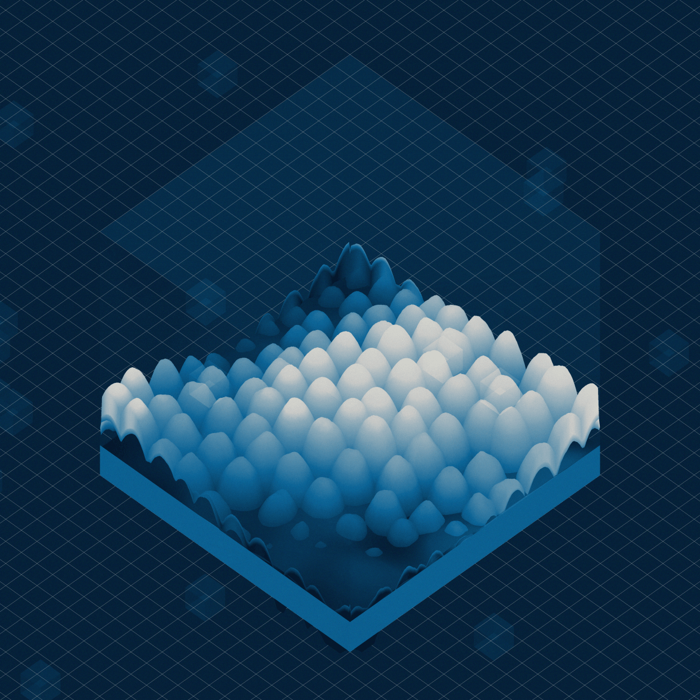
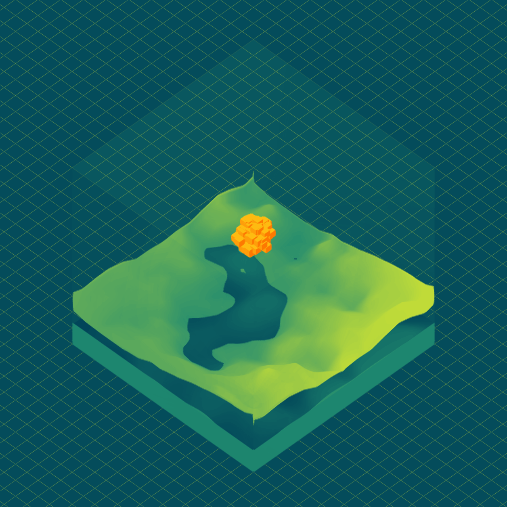
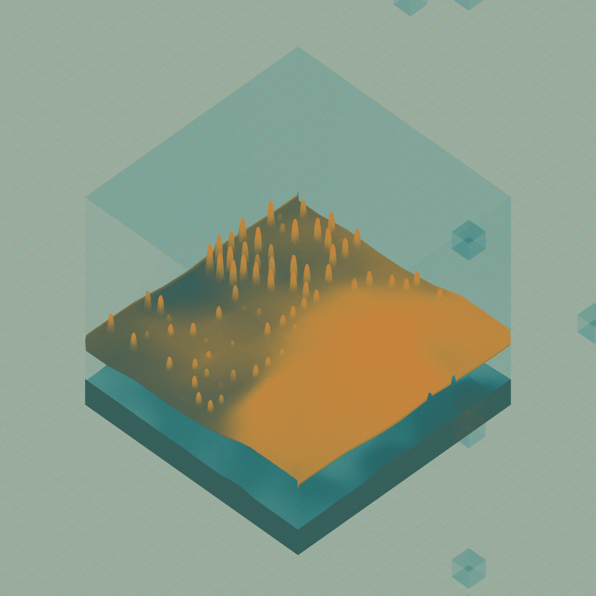
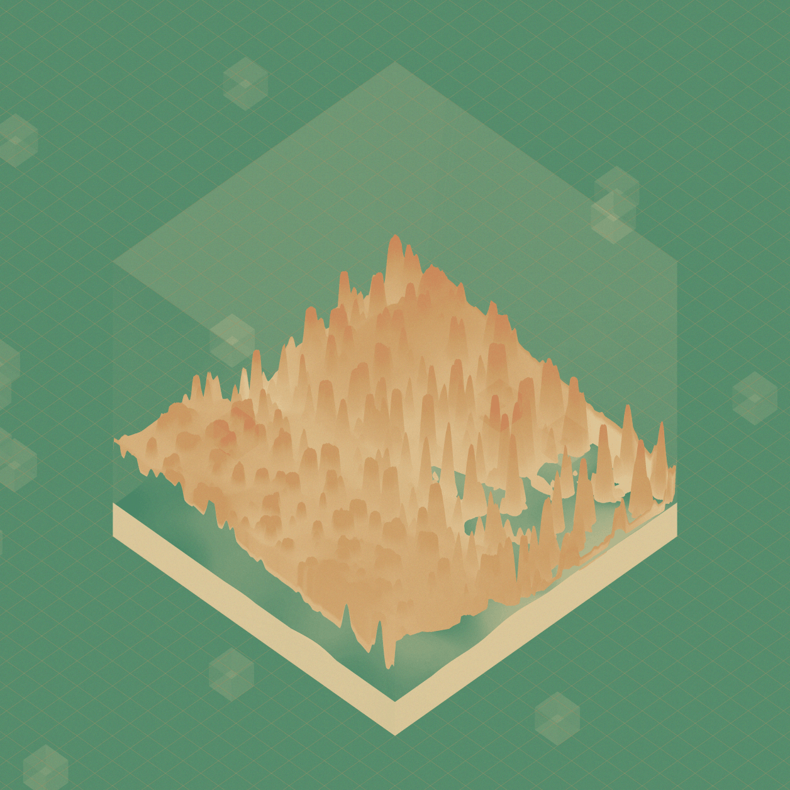

Fermi Paradox came from the speculative idea of the UFO phenomenon being some sort of galactic watchers sent by aliens to keep tabs on other intelligent life forms. This is a generative art project representing the watchers and the spaces being watched.
As the new images from the James Webb Space Telescope has started coming in, it seemed only relevant to finish the Fermi Paradox.
As a generative artist, noise and chaos speaks to me. And I am a very lazy designer if I am being honest, inspired by Ian Hubert's lazy tutorials, to make stuff as lazily as possible. Hence generative art, cause 'generative' is a way to be lazy. Why create one when you can create thousands of something? Also noise and chaos is a beautiful thing. A lot of people feel overwhelmed by chaos but not me. Over my short experience as a working professional and an even shorter experience as an emerging artist, I have encountered lots of chaos and have learned to love it.
The book by James Gleick is quite informative as well as bewildering in terms of breaking down the principles of chaos theory and shedding some light as to how chaos has been perceived over the years, by laymen and researchers alike.
Inspired by the idea of noise, with a combination of generative magic I discovered while working on a previous drop Terra, I started to experiment with terrain generation.
Using a varied range of different noise types, mixing and matching, I came up with a bunch of different types of terrains from mountains to canyons to cities to grasslands and some other weird alien landscapes I haven't found a name for yet.

All the noise driven generative textures.

What the final patch looks like!
Coming from a design background, I got into generative art through some exploration in processing, moving on to Touchdesigner, and finally ending up with Cables for the past three years now. Cables.gl is an open source WebGL tool and its just amazing.
But I think that's enough rambling for now. Sometimes it feels like a lot of the magic disappears once the magician reveals their tricks. Maybe, maybe not, lets see what the future holds.




Created with Mobirise web page templates